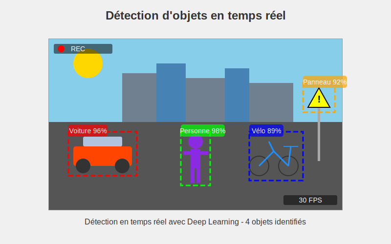

Applications du Deep Learning
Démonstrations pratiques
Démonstration 1 : GitHub Copilot
GitHub Copilot utilise le Deep Learning pour générer des suggestions de code. Observez comment il peut : - Entraîné sur des millions de dépôts GitHub publics - Utilise un modèle de langage basé sur des réseaux neuronaux - Analyse le contexte (code existant, commentaires, nom des fonctions) - Génère des suggestions pertinentes
GitHub Copilot - Exemples
Exemple 1 : Génération à partir d'un commentaire
# Fonction qui calcule la factorielle d'un nombre n de façon récursive
def factorielle(n):
if n <= 1:
return 1
else:
return n * factorielle(n-1)
Exemple 2 : Complétion de code existant
def trier_par_age(personnes):
# Trie la liste de personnes par âge croissant
return sorted(personnes, key=lambda personne: personne['age'])
GitHub Copilot - Exemples (suite)
Exemple 3 : Génération de tests
# Tests unitaires pour la fonction factorielle
def test_factorielle():
assert factorielle(0) == 1
assert factorielle(1) == 1
assert factorielle(5) == 120
assert factorielle(10) == 3628800
Réflexion : Impact sur le développement logiciel
- Comment ces outils changent-ils la nature du travail de développeur ?
- Quelles compétences deviennent plus importantes ?
- Limites et risques potentiels ?
Démonstration 2 : Reconnaissance d'objets
Une application de Deep Learning peut identifier des objets dans des photos ou vidéos en temps réel :
- Nous allons utiliser l'application Teachable Machine
- Observez la détection en temps réel des objets présents dans la salle
- Notez le niveau de confiance (pourcentage) pour chaque prédiction
Comment ça fonctionne ?
- Utilise des réseaux neuronaux convolutifs (CNN)
- Entraîné sur des millions d'images labellisées
- Détecte les caractéristiques visuelles à différents niveaux d'abstraction
- Identifie et localise les objets dans l'image
Reconnaissance d'objets - Observation
Ce que nous allons observer
- Reconnaissance en temps réel
- Niveau de confiance des prédictions
- Robustesse face aux variations (angle, éclairage)

- Le modèle identifie plusieurs objets simultanément
- Chaque objet est encadré et étiqueté
- Un score de confiance est associé à chaque prédiction
Qu'est-ce que la convolution ?

- Le filtre se déplace sur l'image et effectue des calculs à chaque position
- Chaque case du filtre est multipliée par la case correspondante de l'image
- Les résultats sont additionnés pour obtenir une seule valeur
- Cette opération se répète pour créer une nouvelle "carte de caractéristiques"
Fonctionnement interne d'un CNN
- Convolution : application de filtres pour détecter des caractéristiques
- Pooling : réduction de la dimension spatiale
- Activation : introduction de non-linéarité (ReLU)
- Classification : couches entièrement connectées pour la prédiction
Ces opérations permettent d'extraire automatiquement des caractéristiques de plus en plus abstraites.
Comment un CNN reconnaît les images

- L'ordinateur analyse l'image étape par étape, comme notre cerveau
- Il détecte d'abord les contours simples, puis les formes
- Il combine ces informations pour comprendre ce qu'il "voit"
- De simples pixels à une identification complète
Démonstration 3 : Génération de texte
Les modèles de langage utilisent des réseaux neuronaux pour générer du texte cohérent : - outil populaire pour l'expérimentation et l'analyse de données - Nous allons utiliser un modèle simplifié de génération de texte - Donnez une amorce (début de phrase ou paragraphe) - Observez comment le modèle complète le texte de manière cohérente - Essayez avec différents styles : formel, informel, technique, créatif
Comment ça fonctionne ?
- Utilise des modèles de langage comme GPT ou Mistral
- Entraîné sur d'énormes corpus de texte
- Apprend les patterns statistiques du langage
Cette technologie repose sur des modèles de type Transformer qui utilisent des mécanismes d'attention pour : 1. Analyser les relations entre les mots et leur contexte 2. Prédire les tokens (mots/parties de mots) les plus probables 3. Construire progressivement un texte cohérent
Génération de texte - Observation
Ce que nous allons observer
- Complétion de texte à partir d'une amorce
- Adaptation au style et au contexte
- Cohérence à court et moyen terme
Interfaces de démonstration
- Demo Mistral AI : https://mistral.ai/
- GPT-3.5/Claude via Poe : https://poe.com/
Exemples d'amorces à tester
Exemple 1 : Style technique (informatique)
Les réseaux de neurones convolutifs sont particulièrement efficaces pour
Exemple 2 : Style créatif (narration)
Dans les profondeurs de l'océan, un étrange phénomène lumineux attira l'attention des chercheurs qui
Exemples d'amorces à tester (suite)
Exemple 3 : Style formel (business)
L'intégration de l'intelligence artificielle dans le processus client permet aux entreprises de
Exemple 4 : Style instructif (tutoriel)
Pour développer une application web en React, suivez ces étapes :
Points à observer pendant la démonstration
- Cohérence contextuelle : Comment le modèle maintient le sujet et le contexte
- Adaptation au style : Comment le ton et le vocabulaire s'adaptent à l'amorce
- Connaissances intégrées : Informations factuelles que le modèle peut restituer
- Limitations : Moments où le modèle peut générer des informations incorrectes
Application en développement
En tant que développeurs, vous pourriez intégrer cette technologie pour : - Générer automatiquement des descriptions de produits - Créer des assistants virtuels pour guider les utilisateurs - Produire des résumés de documents techniques - Proposer des suggestions de réponses dans une application de service client
Ce que ces applications ont en commun
- Basées sur des architectures de réseaux neuronaux avancées
- Entraînées sur d'énormes volumes de données
- Capables d'extraire automatiquement des patterns complexes
- Produisent des résultats qui semblent "intelligents"